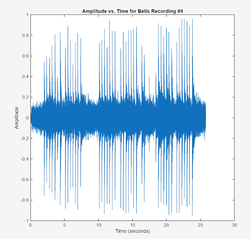
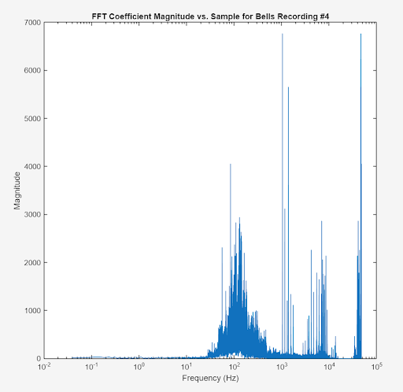
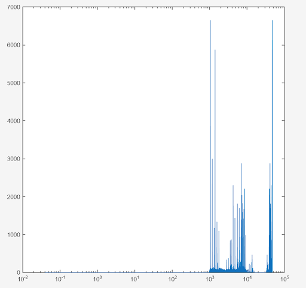
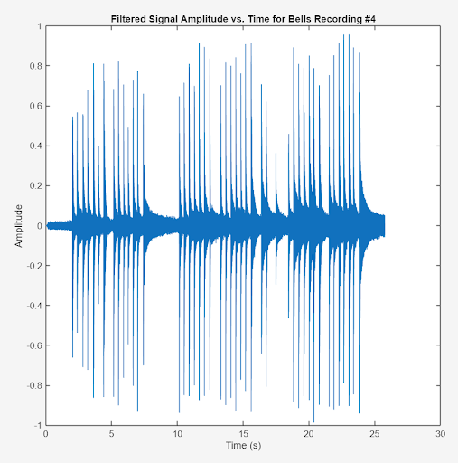
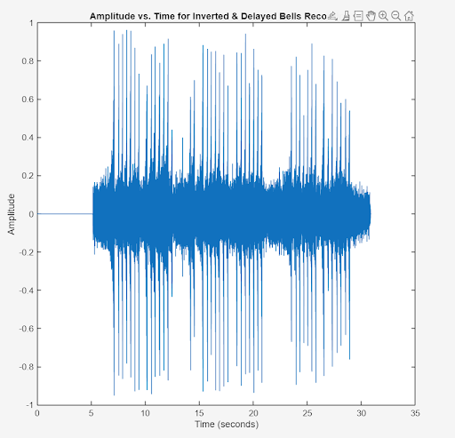

Project Topic Finalized
Here are the tasks that our group recieved for the Project Topic Finalized Assignment:
Collect a part of what would be your dataset. I think for this to be interesting, there must be some noises you are trying to eliminate and some sounds you want to keep. Try to somewhat narrowly define what you are trying to do – eliminate noise from a driving car or airplane? Eliminate (more unpredictable) noises on a zoom call? Depending on what you choose, your data could be a set of recordings of voices or songs with some specific common surrounding noises (phone ringing, another person talking in the distance, coffee machine noises, whatever you want to try eliminating),
Our group is planning on working with multiple instruments, including bells, vinyl turntables, pianos, and the Chinese Guzheng. We will focus on ambient noise that is common in our life. We will first explore the air conditioner noise alongside the bell sounds, and then extend it to other instruments. Later, we will try out other kinds of noises, for example, the dust and scratches hearable in vinyl turntables. In the beginning, we will explore filtering and inverting waveforms on the recordings. Then, we will use Deep Learning algorithms such as CleanUNet to do deeper filtering and better sound restoration.
TASK #2: Use some simple filtering to eliminate noise. When you do, how clear is the signal you want to keep? What other features (other than frequency) distinguish the other “noise” sounds from the signal you want to keep? Describe how you might quantify those other features for an algorithm.
Ronald used a highpass equiripple filter, designed in Matlab’s filterDesigner, to eliminate the sound of the air conditioner that was present in the audio file of the bells. Here are some plots of one of the audio files.




The spikes in the Amplitude vs. Time plot are the times where the mallet hits the keys, and the noise is always occurring in the middle, even between mallet hits. When the FFT was taken, there was a noticeable cluster in the 100 Hz range, which Ronald assumed to be the low frequencies of the air conditioner. The final filtered music was definitely an improvement, and the noise was less pronounced (it sounded more like a hiss). For features, I did notice that the noise I want to eliminate is always there, while the noise I want to keep is not always there. It also seems like the noise source’s amplitude is more or less constant in time.
TASK #3: Noise cancelling headphones are expensive because they need to invert the sampled waveform in real time. No computing system would ever be able to meet that low latency requirement without significant restrictions on the types of noise that can be removed. In your collected data, add an inverted waveform at a significant delay and see how it sounds. Comment on this challenge.
In the inverted & delayed waveform, I could still make out when the mallet hit the keys but it sounded very different. The sound of the noise, or of the air conditioner, remained more similar. Inverting the sampled waveform in real time is a challenge because noise cancelling headphones have to use a causal system. We collected all of the data and then found a cutoff frequency to filter out the noise, which was not causal, so the noise cancelling headphones don’t have the luxury of seeing all of the data. That’s probably why noise cancelling headphones have to restrict to certain sources of audio (like periodic noises or constant noises) so that only with the data that they have, they can still provide a good cancellation in real time. If the noise changes constantly, the algorithm would have a harder time.

TASK #4: It may be helpful to explore deep learning for more complicated noise removal (e.g., UNet for human speech isolation). Provide at least two references and summarize them in a paragraph. These can include the examples you included in your brainstorming.
From what we researched, CNN based methods provide a practical, easy-to-implement approach for learning patterns directly from spectrograms to denoise audio. For instance, "A fully convolutional neural network for speech enhancement" presents a simple CNN that takes noisy spectrograms as input and predicts clearer outputs, demonstrating that even relatively simple architectures can significantly improve speech quality. Another widely used method is introduced in "Speech denoising with deep feature losses", which combines convolutional networks with perceptual loss functions to generate more natural sound effects. Viewing through previous projects on audio denoising, we came across the project “Deconstructing Music", which used U-Net to isolate different instruments and voice parts. This inspired us to research U-Net for our project. The paper “Speech Denoising in the waveform domain with self attention” provides a good starting point for us. It uses a U-Net, Self-attention, and hybrid loss and achieves better performance than waveform SOTA. We can try to use this model on instrumental audio recordings instead of speech recordings. Another helpful research paper, "Speech Denoising without Clean Training Data: a Noise2Noise Approach," proposed a Noise2Noise approach to denoise audio without the need for clean training data. This approach is particularly useful for cases where clean data is not available or difficult to obtain, which is particularly useful for incomplete datasets.

Here are the references to our write-up for task 4:
Ref: Park, S. R., & Lee, J. (2016, September 22). A fully convolutional neural network for speech enhancement. arXiv.org. https://arxiv.org/abs/1609.07132
Germain, F. G., Chen, Q., & Koltun, V. (2018, September 14). Speech denoising with deep feature losses. arXiv.org. https://arxiv.org/abs/1806.10522
Kong, Z., Ping, W., Dantrey, A., & Catanzaro, B. (2022). Speech denoising in the waveform domain with self-attention. arXiv. https://doi.org/10.48550/arXiv.2202.07790
Kerkmax A., Knapp G., Lee J., Garcia J. U-Net Architecture. https://joannale6.wixsite.com/eecs351project/u-net-architecture
Kashyap, M. M., Tambwekar, A., Manohara, K., & Natarajan, S. (2021, August 30). Speech denoising without clean training data: A Noise2Noise approach. Interspeech 2021. https://doi.org/10.21437/Interspeech.2021-1130